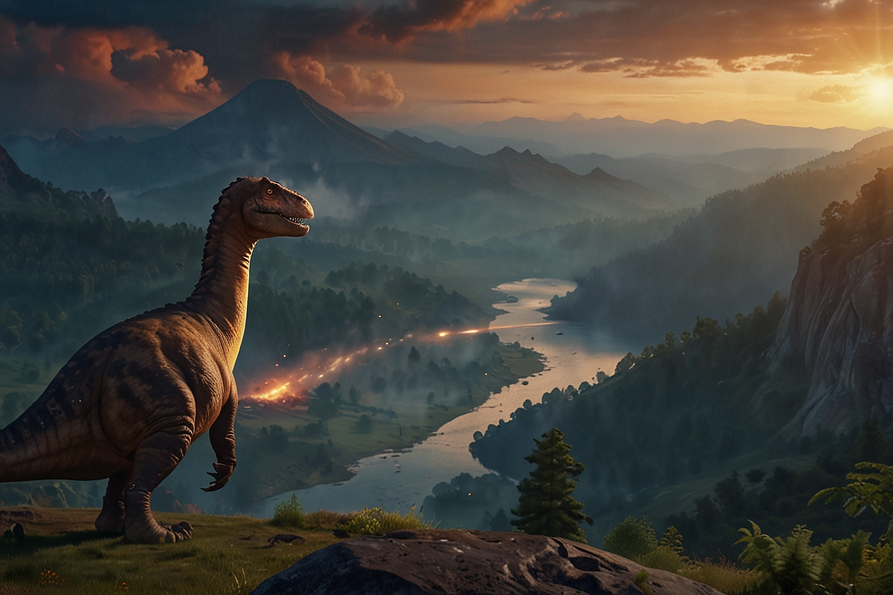
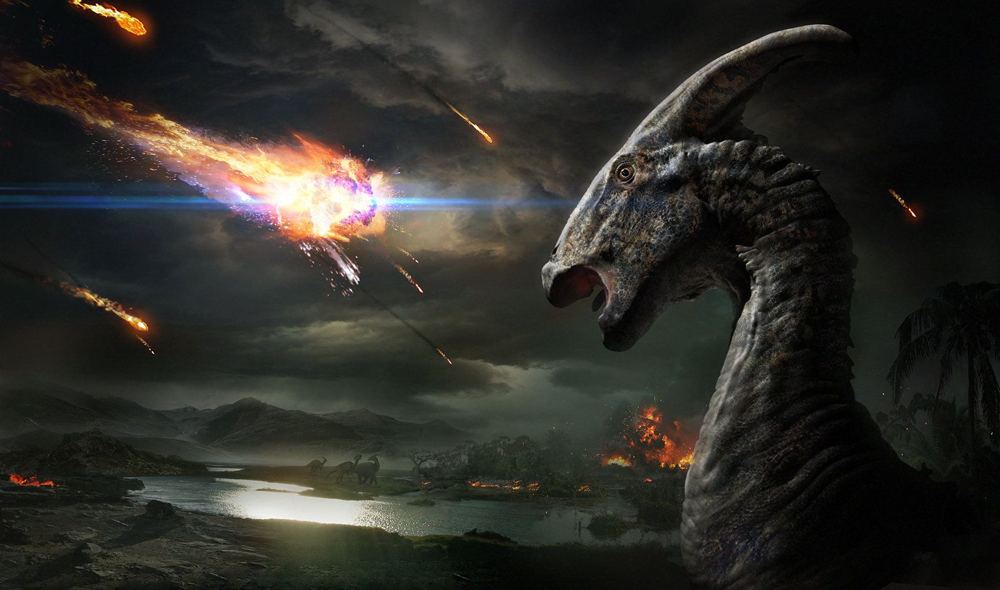
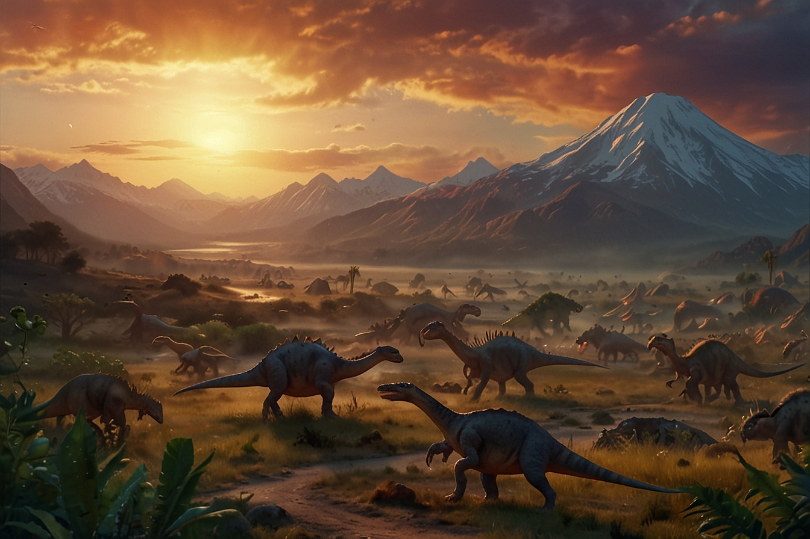

ИСТОРИЯ ДИНОЗАВРОВ

165 миллионов лет
Динозавры бродили и жили на Земле. Эпоху динозавров разделили на три периода. Это триасовый, юрский и меловой периоды.
ЧИТАТЬ

65 мил. лет назад
в конце мелового периода, динозавры вымерли. Задолго до появления самих динозавров на поверхности планеты не было живых организмов.
ЧИТАТЬ

700 различных видов
На сегодняшний день исследователи описали часть всех видов, которые могли существовать в истории нашей планеты
ЧИТАТЬ